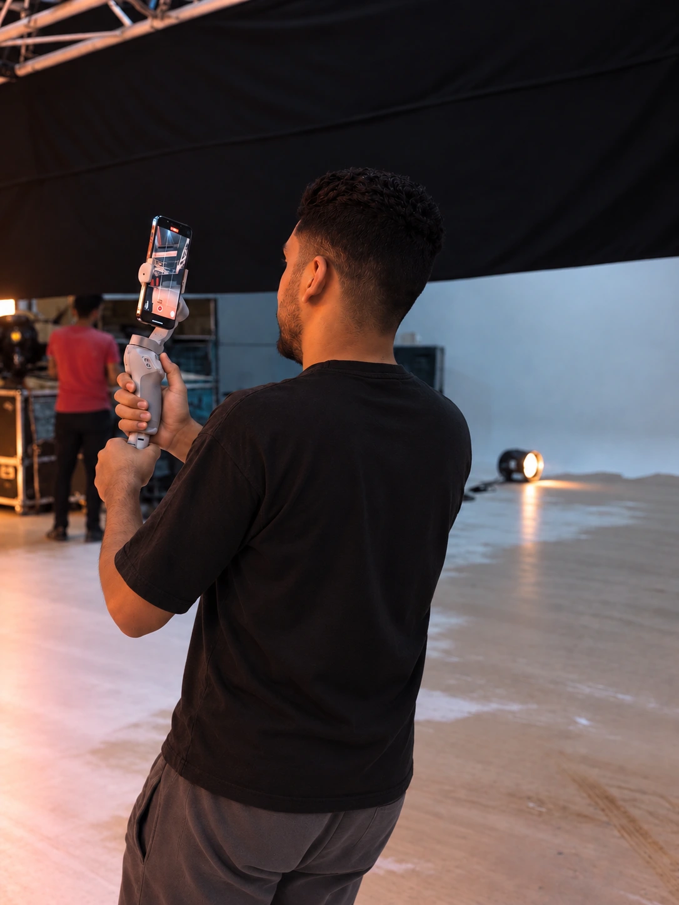
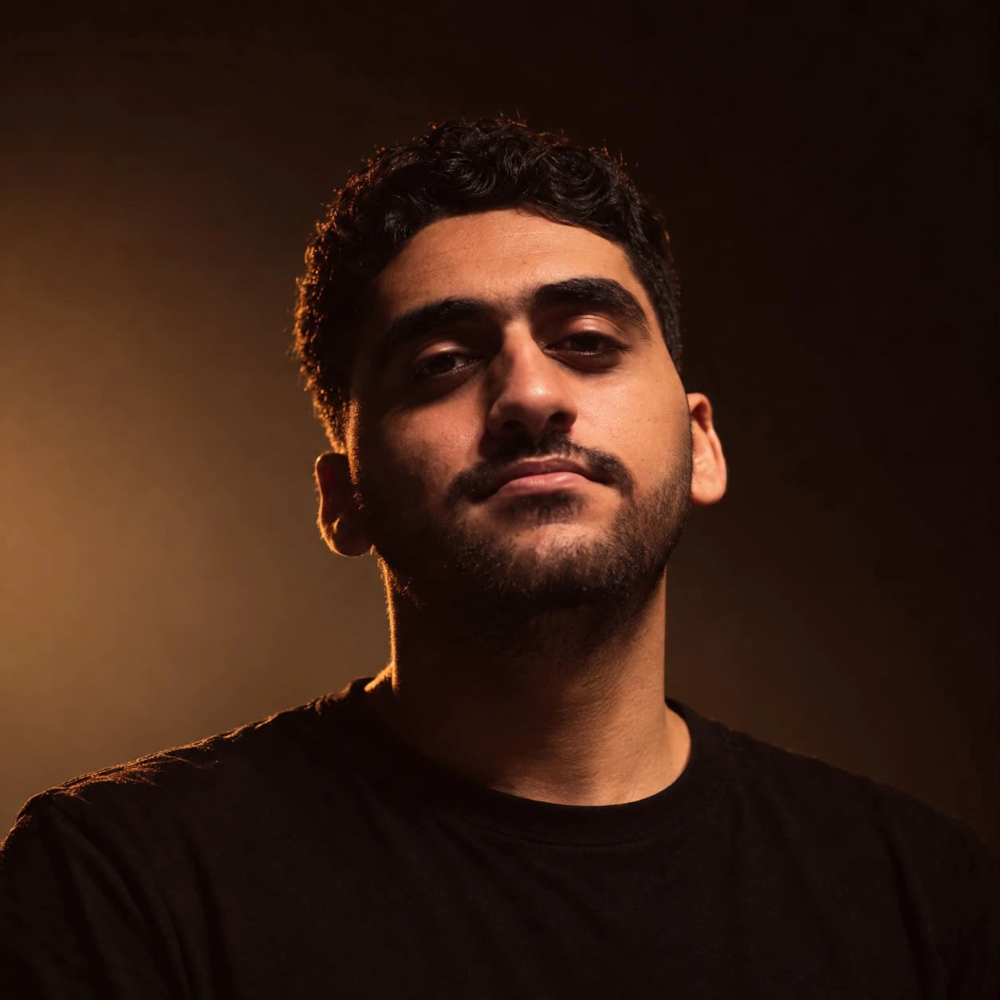

A DIFFERENT WAY TO SEE.
Not just seen.
Felt.
I turn everyday moments into
stories that make you stop scrolling.
CRAFTED TO CONNECT.
Small moments.
Lasting impressions.
THE VISION IS BIGGER.
Food, people, places. I find the story in the details — and shape it for the way we watch today.
Made to move you.
A closer look at the food, the energy,
and everything behind the scenes.

A curious eye.
A clear vision.
I’m Mohamed Fawzy.
You can call me Fawziko.
I shoot. I edit. I tell stories. From the first frame to the final cut, I create mobile-first visuals with a feeling you can’t quite scroll past.
Two years of hands-on work across food films, event coverage and behind-the-scenes content. Always looking for the small detail that makes a story feel real.
One vision.
Every frame.
Considered from the start.
Crafted all the way through.
01Mobile filmmaking
CAPTURE THE MOMENT
Vertical-first filming for food, behind the scenes, events and social campaigns. Thoughtful framing, natural movement and a story in every shot.
02Editing & storytelling
FIND THE RHYTHM
Clean, deliberate edits for Reels, Stories and short-form platforms. Pacing, sound and transitions that give every story its own rhythm.
03Visual direction
SHAPE THE FEELING
Framing, light, styling and color choices shaped around your brand. A coherent visual language from the initial mood to the final delivery.
Videography · Editing · Color · Sound · Motion
ALWAYS EXPLORING. ALWAYS REFINING.